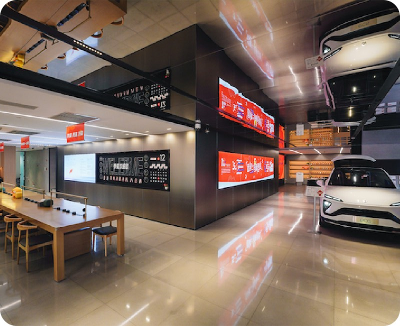
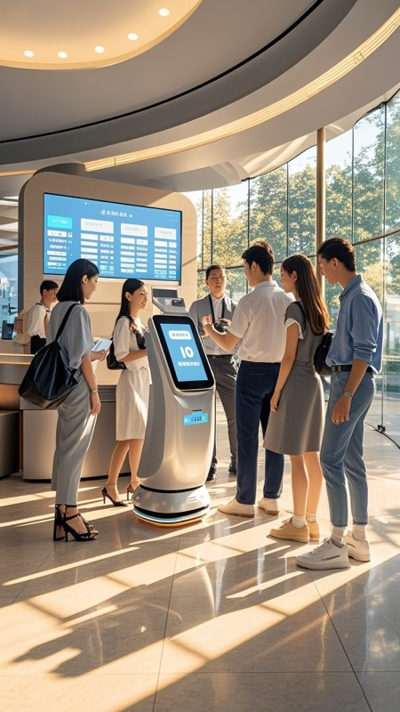

12
Mar
2026
Smart Banking Digital Transformation Solution


MoreD Technology delivers a smart banking platform that transforms traditional bank branches into intelligent service hubs. The solution features AI-powered customer service robots, intelligent queue management, and real-time data dashboards. The platform integrates facial recognition for VIP identification, predictive analytics for personalized product recommendations, and an omni-channel digital experience across mobile, kiosk, and counter services — significantly reducing wait times and boosting service efficiency.